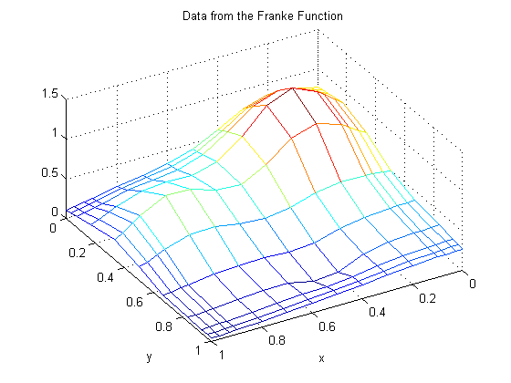
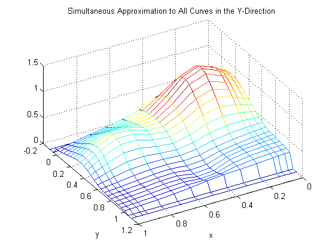
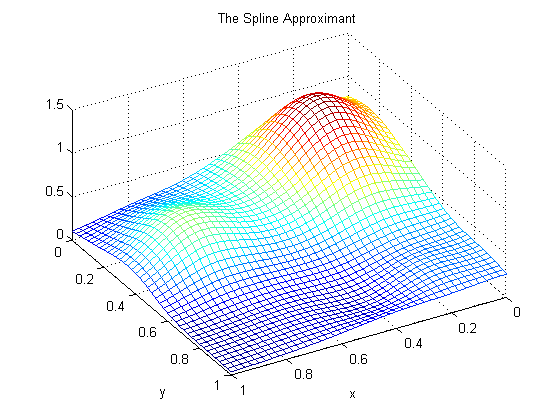
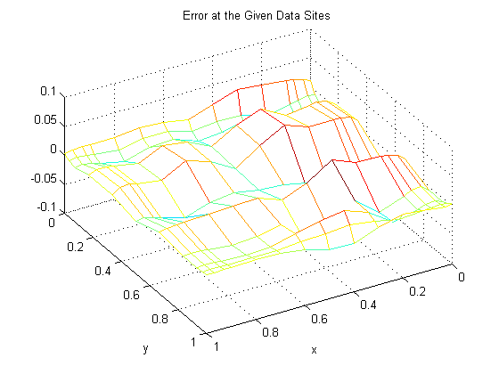
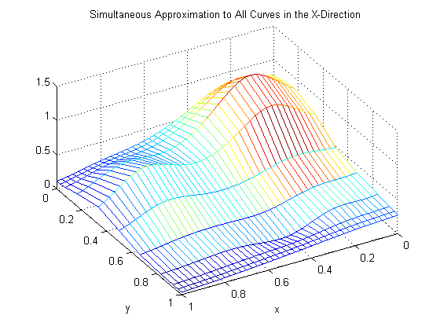
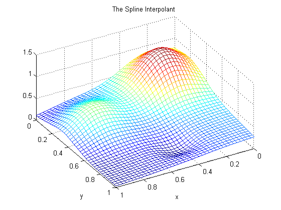
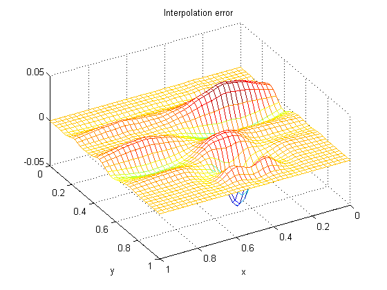

Bivariate Tensor Product Splines
This demo explains how the spline commands in Curve Fitting Toolbox™ take advantage of the simple structure of gridded data.
Contents
- Introduction
- Example: Least-Squares Approximation to Gridded Data
- A note about NDGRID vs. MESHGRID
- Choice of Spline Space in the Y-Direction
- Evaluation
- From Curves to a Surface; Choosing a Spline Space in the X-Direction
- Why Does This Evaluation Work?
- More Efficient Alternatives
- Check it Out
- Error of the Approximation
- Apparent Bias of This Approach
- Doing It the Other Way Around: Start With a Spline Space in X
- From Curves to a Surface: Using a Spline Space in the Y-Direction
- Another Example: Interpolation
- Interpolation of Resulting Coefficients
- Evaluation
- Error of the Approximation
Introduction
Since Curve Fitting Toolbox can handle splines with vector coefficients, it is easy to implement interpolation or approximation to gridded data by tensor product splines. Most spline construction commands in the toolbox take advantage of this.
However, you might be interested in seeing a detailed description of how approximation to gridded data by tensor products is actually done for bivariate data. This will also come in handy when you need some tensor product construction not provided by the commands in the toolbox.
Example: Least-Squares Approximation to Gridded Data
Consider, for example, least-squares approximation to given data
z(i,j) = f(x(i),y(j)) for i = 1:I, j = 1:J.
Here are some gridded data, taken from Franke's sample function. Note that the grid is somewhat denser near the boundary, to help pin down the approximation there.
x = sort([(0:10)/10,.03 .07, .93 .97]); y = sort([(0:6)/6,.03 .07, .93 .97]); [xx,yy] = ndgrid(x,y); % note: ndgrid rather than meshgrid z = franke(xx,yy); mesh(x,y,z.'); xlabel('x'); ylabel('y'); view(150,50); title('Data from the Franke Function');
A note about NDGRID vs. MESHGRID
Note that the statements
[xx,yy] = ndgrid(x,y); z = franke(xx,yy);
used above make certain that z(i,j) is the value of the function being approximated at the grid point (x(i),y(j)).
However, the MATLAB® command mesh(x,y,z) expects z(j,i) (note the reversed order of i and j) as the value at the grid point (x(i),y(j)). For that reason, the above plot was generated by the statement
mesh(x,y,z.');
i.e., using the transpose of the matrix z.
Such transposing would not have been necessary had we used meshgrid instead of ndgrid. But the resulting z would not have followed approximation theory standards.
Choice of Spline Space in the Y-Direction
Next, we choose a spline order ky and a knot sequence knotsy for the y-direction
ky = 3; knotsy = augknt([0,.25,.5,.75,1],ky);
and then obtain
sp = spap2(knotsy,ky,y,z);
a spline curve whose i-th component is an approximation to the curve (y,z(i,:)) for i=1:I.
Evaluation
In particular,
yy = -.1:.05:1.1; vals = fnval(sp,yy);
creates the matrix vals whose (i,j)-th element can be taken as an approximation to the value f(x(i),yy(j)) of the underlying function f at the grid point (x(i),yy(j)). This is evident when we plot vals.
mesh(x,yy,vals.'); xlabel('x'); ylabel('y'); view(150,50); title('Simultaneous Approximation to All Curves in the Y-Direction');
Note that, for each x(i), both the first two and the last two values are zero since both the first two and the last two sites in yy are outside the basic interval for the spline sp.
Also note the "ridges" that run along the y-direction, most noticeable near the peaks of the surface. They confirm that we are plotting smooth curves in one direction only.
From Curves to a Surface; Choosing a Spline Space in the X-Direction
To get an actual surface, we now have to go one step further. Consider the coefficients coefsy of the spline sp, as obtained by
coefsy = fnbrk(sp,'c');
Abstractly, you can think of the spline sp as the vector-valued function
y |--> sum coefsy(:,r) B_{r,ky}(y)
rwith the i-th element, coefsy(i,r), of the vector coefficient coefsy(:,r) corresponding to x(i) for i=1:I. This suggests approximating each curve (x,coefsy(:,r)) by a spline, using the same order kx and the same appropriate knot sequence knotsx for every r.
kx = 4; knotsx = augknt(0:.2:1,kx); sp2 = spap2(knotsx,kx,x,coefsy.');
The use of the spap2 command here needs, perhaps, an explanation.
Recall that spap2(knots,k,x,fx) treats fx(:,j) as the value at x(j), i.e., takes each column of fx as a data value. Since we wanted to fit the value coefsy(i,:) at x(i), for all i, we have to provide spap2 with the transpose of coefsy.
Now consider the transpose of the coefficient matrix of the resulting spline "curve" sp2, obtained as
coefs = fnbrk(sp2,'c').';
coefs provides the bivariate spline approximation
(x,y) |--> sum sum coefs(q,r) B_{q,kx}(x) B_{r,ky}(y)
q rto the original data
(x(i),y(j)) |--> f(x(i),y(j)) = z(i,j).
We use spcol to provide the values B_{q,kx}(xv(i)) and B_{r,ky}(yv(j)) needed to evaluate this spline surface at some grid points (xv(i),yv(j)) and then plot the values.
xv = 0:.025:1; yv = 0:.025:1; values = spcol(knotsx,kx,xv)*coefs*spcol(knotsy,ky,yv).'; mesh(xv,yv,values.'); xlabel('x'); ylabel('y'); view(150,50); title('The Spline Approximant');
Why Does This Evaluation Work?
The statement
values = spcol(knotsx,kx,xv) * coefs * spcol(knotsy,ky,yv).'
used above makes good sense since, for example, spcol(knotsx,kx,xv) is the matrix whose (i,q)-th entry equals the value B_{q,kx}(xv(i)) at xv(i) of the q-th B-spline of order kx for the knot sequence knotsx, while we want to evaluate the expression
sum sum coefs(q,r) B_{q,kx}(x) B_{r,ky}(y)
q r
= sum sum B_{q,kx}(x) coefs(q,r) B_{r,ky}(y)
q rat (x,y) = (xv(i),yv(j)).
More Efficient Alternatives
Since the matrices spcol(knotsx,kx,xv) and spcol(knotsy,ky,yv) are banded, it may be more efficient for "large" xv and yv (though perhaps more memory-consuming) to make use of fnval.
value2 = fnval(spmak(knotsx,fnval(spmak(knotsy,coefs),yv).'),xv).';
In fact, fnval and spmak can deal directly with multivariate splines, hence the above statement can be replaced by
value3 = fnval( spmak({knotsx,knotsy},coefs), {xv,yv} );
Better yet, the construction of the approximation can be done by one call to spap2, therefore we can obtain these values directly from the given data by the statement
value4 = fnval( spap2({knotsx,knotsy},[kx ky],{x,y},z), {xv,yv} );
Check it Out
Here is a check, specifically, the relative difference between the values computed in these four different ways.
diffs = abs(values-value2) + abs(values-value3) + abs(values-value4); max(max(diffs)) / max(max(abs(values)))
ans = 1.6809e-015
The four methods return the same values, up to round-off error.
Error of the Approximation
Here is a plot of the error, i.e., the difference between the given data value and the value of the spline approximation at those data sites.
errors = z - spcol(knotsx,kx,x)*coefs*spcol(knotsy,ky,y).'; mesh(x,y,errors.'); xlabel('x'); ylabel('y'); view(150,50); title('Error at the Given Data Sites');
The relative error is
max(max(abs(errors))) / max(max(abs(z)))
ans =
0.0539
This is perhaps not too impressive. On the other hand, the ratio
(degrees of freedom used) / (number of data points)
is only
numel(coefs)/numel(z)
ans =
0.2909
Apparent Bias of This Approach
The approach followed here seems biased: We first think of the given data values z as describing a vector-valued function of y, and then we treat the matrix formed by the vector coefficients of the approximating curve as describing a vector-valued function of x.
What happens when we take things in the opposite order, i.e., think of z as describing a vector-valued function of x, and then treat the matrix made up from the vector coefficients of the approximating curve as describing a vector-valued function of y?
Perhaps surprisingly, the final approximation is the same, up to roundoff. The next section contains the numerical experiment confirming that.
Doing It the Other Way Around: Start With a Spline Space in X
First, we fit a spline curve to the data, but this time with x as the independent variable, hence it is the rows of z which now become the data values. Correspondingly, we must supply z.' (rather than z) to spap2, and obtain
spb = spap2(knotsx,kx,x,z.');
a spline approximation to all the curves (x,z(:,j)) for j=1:J. In particular,
valsb = fnval(spb,xv).';
creates a matrix whose (i,j)-th element can be taken as an approximation to the value f(xv(i),y(j)) of the underlying function f at the grid point (xv(i),y(j)). This is evident when we plot valsb.
mesh(xv,y,valsb.'); xlabel('x'); ylabel('y'); view(150,50); title('Simultaneous Approximation to All Curves in the X-Direction');
Again note the ridges, this time running along the x-direction. They confirm that, once again, we are plotting smooth curves in one direction only.
From Curves to a Surface: Using a Spline Space in the Y-Direction
Now comes the second step, to get the actual surface.
Let coefsx be the coefficients for spb, i.e.,
coefsx = fnbrk(spb,'c');
Abstractly, you can think of the spline spb as the vector-valued function
x |--> sum coefsx(r,:) B_{r,kx}(x)
rwith the j-th entry coefsx(r,j) of the vector coefficient coefsx(r,:) corresponding to y(j), for all j. Thus, we now fit each curve (y,coefsx(r,:)) by a spline, using the same order ky and the same appropriate knot sequence knotsy for each r.
spb2 = spap2(knotsy,ky,y,coefsx.');
In the construction of spb2, we again need to transpose the coefficient matrix from spb, since spap2 takes the columns of its last input argument as the data values.
For this reason, there is now no need to transpose the coefficient matrix coefsb of the resulting "curve".
coefsb = fnbrk(spb2,'c');
Claim: coefsb equals the earlier coefficient array coefs, up to round-off. For a proof of this, see the discussion of the tensor product construct in Curve Fitting Toolbox documentation. Here, we simply make the following check.
max(max(abs(coefs - coefsb)))
ans = 8.8818e-016
Thus, the bivariate spline approximation
(x,y) |--> sum sum coefsb(q,r) B_{q,kx}(x) B_{r,ky}(y)
q rto the original data
(x(i),y(j)) |--> f(x(i),y(j)) = z(i,j)
obtained coincides with the earlier one, which generated coefs rather than coefsb.
As observed earlier, you can carry out the entire construction we just went through (in two ways), using just two statements, one for the construction of the least-squares approximant, the other for its evaluation at a rectangular mesh.
tsp = spap2({knotsx,knotsy},[kx,ky],{x,y},z);
valuet = fnval(tsp,{xv,yv});
Here, as another check, is the relative difference between the values computed earlier and those computed now:
max(max(abs(values-valuet))) / max(max(abs(values)))
ans = 5.6029e-016
Another Example: Interpolation
Since the data come from a smooth function, we should be interpolating it, i.e., using spapi instead of spap2, or, equivalently, use spap2 with the appropriate knot sequences. For illustration, here is the same process done with spapi.
To recall, the (univariate) data sites were
x
x =
Columns 1 through 7
0 0.0300 0.0700 0.1000 0.2000 0.3000 0.4000
Columns 8 through 14
0.5000 0.6000 0.7000 0.8000 0.9000 0.9300 0.9700
Column 15
1.0000
y
y =
Columns 1 through 7
0 0.0300 0.0700 0.1667 0.3333 0.5000 0.6667
Columns 8 through 11
0.8333 0.9300 0.9700 1.0000
We use again quadratic splines in y, hence use knots midway between data sites.
knotsy = augknt( [0 1 (y(2:(end-2))+y(3:(end-1)))/2 ], ky);
spi = spapi(knotsy,y,z);
coefsy = fnbrk(spi,'c');
Interpolation of Resulting Coefficients
We use again cubic splines in x, and use the not-a-knot condition. We therefore use all but the second and the second-to-last data points as knots.
knotsx = augknt(x([1,3:(end-2),end]), kx);
spi2 = spapi(knotsx,x,coefsy.');
icoefs = fnbrk(spi2,'c').';
Evaluation
We are now ready to evaluate the interpolant
ivalues = spcol(knotsx,kx,xv)*icoefs*spcol(knotsy,ky,yv).';
and plot the interpolant at a fine mesh.
mesh(xv,yv,ivalues.'); xlabel('x'); ylabel('y'); view(150,50); title('The Spline Interpolant');
Again, the steps above can be carried out using just two statements, one for the construction of the interpolant, the other for its evaluation at a rectangular mesh.
tsp = spapi({knotsx,knotsy},{x,y},z);
valuet = fnval(tsp,{xv,yv});
For a check, we also compute the relative difference between the values computed earlier and those computed now.
max(max(abs(ivalues-valuet))) / max(max(abs(ivalues)))
ans = 5.5068e-016
Error of the Approximation
Next, we compute the error of the interpolant as an approximation to the Franke function.
fvalues = franke(repmat(xv.',1,length(yv)),repmat(yv,length(xv),1)); error = fvalues - ivalues; mesh(xv,yv,error.'); xlabel('x'); ylabel('y'); view(150,50); title('Interpolation error');
The relative approximation error is
max(max(abs(error))) / max(max(abs(fvalues)))
ans =
0.0409